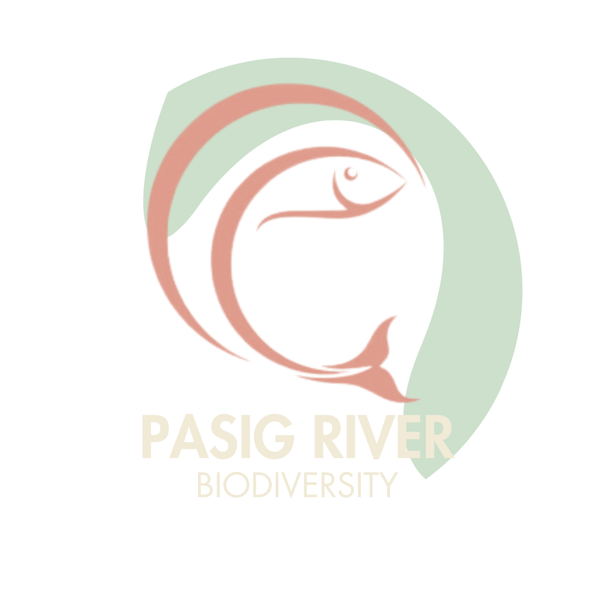

Home
About Us
The Problem
Progress Made
Support/Donate
Blog/Updates
Marcos wants Pasig River development done in three years | ANC
Marcos: Pasig River Rehabilitation to be People-Centered, Community-Driven
Pasig River Rehabilitation to Focus on Improving Water Quality and Green Spaces
Pasig River Esplanade, patok sa publiko | UB
Pasig City River as a mode of transport: Ferry boats
Pasig River Rehabilitation Inititiative
Gov't to begin relocating Pasig River informal settlers
Invasive fish in Pasig River
Vlog about Fishing in Pasig River
Read More...
Welcome to Blogs/Updates
Select an option from the sidebar to view different content
DENR-PRCMO removes 1,603.53 tons of waste from Pasig River System
A dream for Pasig River
Operasyon ng Pasig River ferry service sisimulan ngayong linggo
Green Initiatives by the MMDA for the Pasig River
The First Lady’s Corner: Reimagining Pasig River